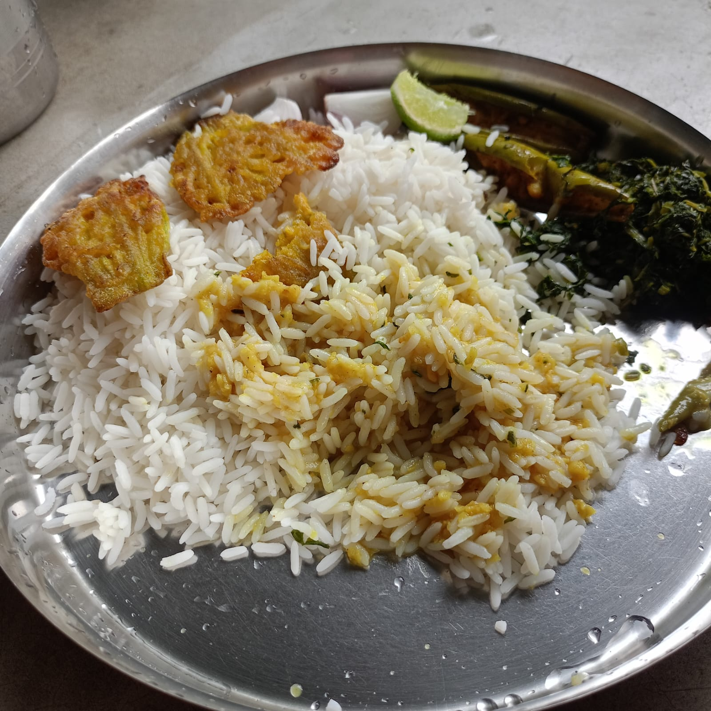
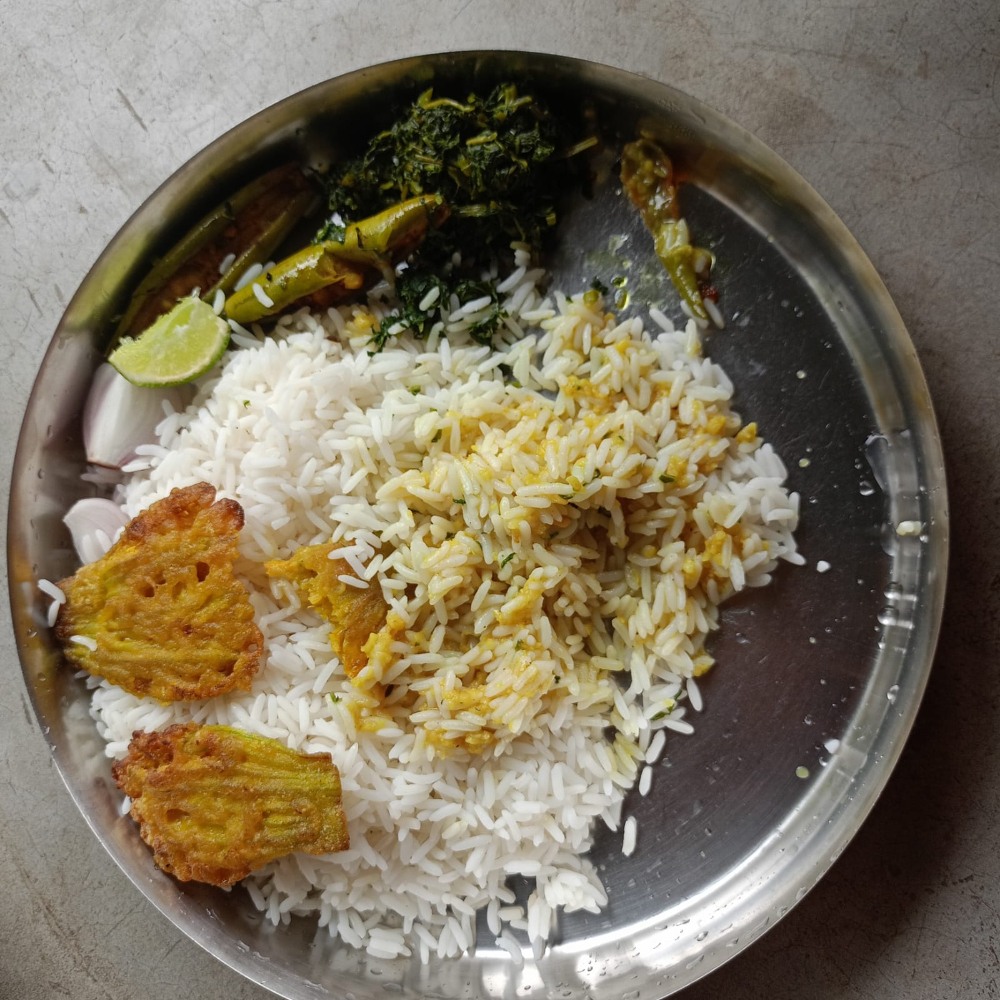

SPICELO STORY
🍲 Masoor Dal Fry with Raw Papaya
A simple homemade Masoor Dal Fry with raw papaya, fresh vegetables and simple spices. This comforting dal is finished with a flavourful cumin tadka and ghee.

❤️ The Story Behind This Dish
My sister used to make this Masoor Dal Fry, and I would watch her while she cooked. Slowly, I learned how to make it myself.
The first time I tried making it, the taste wasn't quite right. But I didn't give up.
After making it two or three more times, I started getting the taste I wanted.
Today, while I was working on my computer, it suddenly started raining. The weather made me think of something warm and homemade, so I decided to make this dal.
I cooked it, enjoyed it with rice, and realized that a recipe can become special when you learn it from someone you love.
40 min
2 People
Homemade
Easy
Ingredients
For 2 persons
- 200 g masoor dal
- 1 onion
- 2 green chillies
- 1 spoon red chilli powder
- 1 tomato
- 4 pieces raw papaya, cut into normal-size pieces
- ½ spoon cumin (jeera)
- 1 spoon oil
- 1 spoon ghee
- 2 dry red chillies
- Salt according to taste
- 200 ml water for boiling the dal
- 300 ml fresh water for cooking
📸 From Masoor Dal to Dal Fry
Follow the cooking journey from the cooked masoor dal and fresh vegetables to the finished Dal Fry served with rice.


🎬 Masoor Dal Fry Cooking Video
How to Make Masoor Dal Fry with Raw Papaya
- First, clean 200 g masoor dal properly with water.
- Add 200 ml water and boil the dal for about 15 minutes. Keep the boiled dal aside.
- Heat a kadai and fry the chopped onion, tomato and green chillies until they become nicely browned.
- While frying the onion, tomato and green chillies, add 1 spoon red chilli powder and mix well.
- Add the boiled masoor dal and mix it properly with the cooked onion and tomato mixture.
- Add 300 ml fresh water and salt according to taste.
- Add 4 pieces of raw papaya after adding the dal and fresh water.
- Cook the dal on medium flame for about 20 minutes.
- Once the dal is cooked, keep it aside.
- For the tadka, heat 1 spoon oil in a kadai.
- Add ½ spoon cumin and 2 dry red chillies.
- Add the cooked dal into the tadka and cook for another 5 minutes.
- Add 1 spoon ghee at the end and mix gently.
- Serve the hot Masoor Dal Fry with rice.
Total time: approximately 40 minutes.
Tips for Making Delicious Dal Fry
- Clean the masoor dal properly before boiling.
- Brown the onion and tomato properly for a deeper homemade flavour.
- Add the red chilli powder while frying the onion, tomato and green chillies.
- Add the raw papaya after adding the boiled dal and fresh water.
- Cook the dal on medium flame so the raw papaya becomes properly cooked.
- Add the cumin and dry red chillies during the tadka.
- Add ghee at the end for a rich homemade taste.
- Serve hot with rice.
Masoor Dal Fry FAQ
How many people does this Dal Fry recipe serve?
This recipe is designed to serve approximately 2 people.
How much masoor dal is used?
This recipe uses 200 g of masoor dal.
How much water is used?
Use 200 ml water for boiling the dal and 300 ml fresh water during cooking.
When is the raw papaya added?
The raw papaya is added after the boiled dal and 300 ml fresh water are added.
When is the red chilli powder added?
The red chilli powder is added while frying the onion, tomato and green chillies.
How long does this Dal Fry take to make?
The complete cooking time is approximately 40 minutes.
What can I serve with Masoor Dal Fry?
This Dal Fry can be served hot with rice.
My Food Note
For me, this Dal Fry is special because I learned it by watching my sister cook.
The first attempt was not perfect, but after making it two or three times, I learned how to get the taste I wanted.
Today's rainy weather gave me the perfect reason to make it again and enjoy it with rice.


💬 Comments